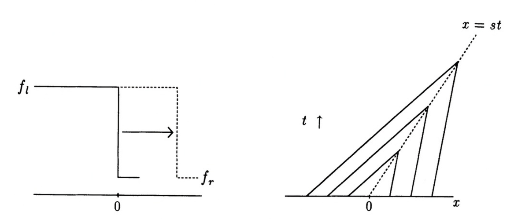
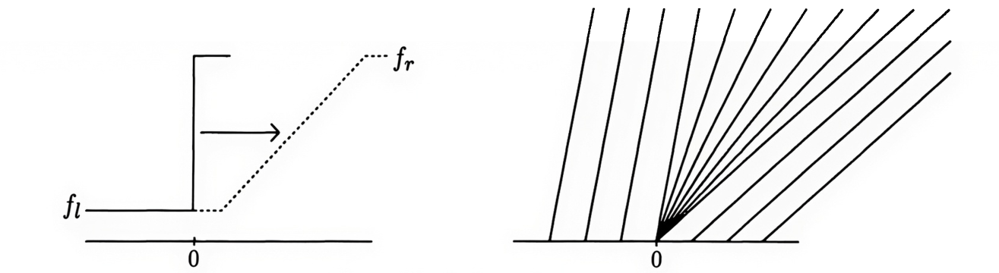
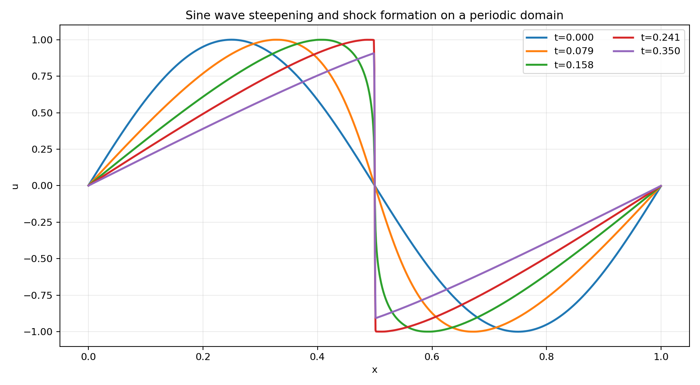
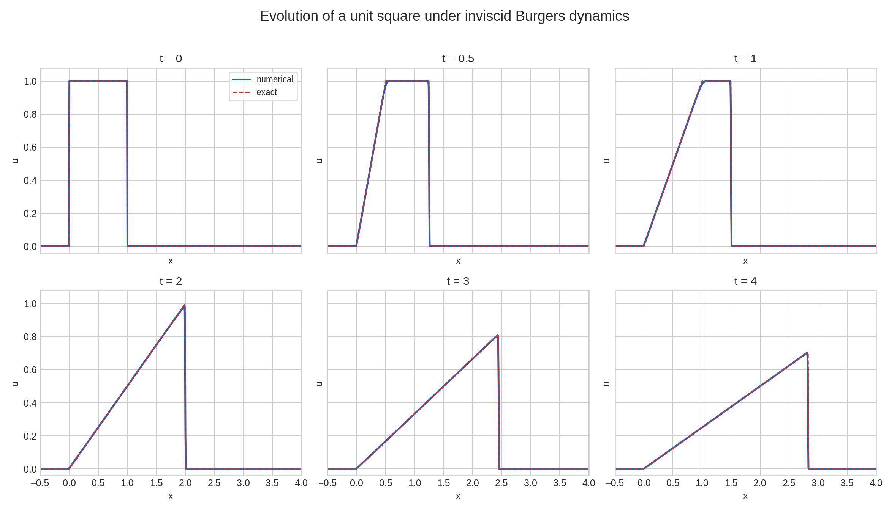

Research note · Numerical methods
The Burgers Equation
We study the simplest nonlinear scalar hyperbolic PDE, the Burgers Equation, and show how shocks and rarefaction waves form.
The Theory
Burgers’ equation is the simplest scalar nonlinear hyperbolic equation (in the inviscid limit). It has a quadratic nonlinearity and serves as a model for more complex equations like the Euler and Navier-Stokes equations. Denoting the scalar as $f(x,t)$ the inviscid Burgers’ equation is written as
$$ \frac{\partial f}{\partial t} + \frac{\partial}{\partial x} \left( \frac{1}{2} f^2 \right) = 0. $$The flux function is $F(f) = f^2/2$. Hence, it has a single eigenvalue, $\partial F/\partial f = f$. As the eigenvalue depends on the solution itself, the system admits more complex features like shocks and rarefactions, even if the initial condition is smooth.
To understand how shocks and rarefactions form, first consider the scalar quasilinear PDE
$$ \frac{\partial V}{\partial t} + a(V)\frac{{\partial V}}{\partial x} = 0 $$for $-\infty < x < \infty$. For this system we simply have a single eigenvalue, $\lambda^1 = a(V)$. This equation also indicates that if we define characteristics in the $(x,t)$ plane:
$$ x = \lambda^1 t + C = a(V) t + C $$where $C$ is some constant, then the solution will remain constant along those characteristics. (Of course, different characteristics will, in general, have different values of $V$).
We can use this method of characteristics to solve the Burgers equation with initial conditions $f(x,0) = f_0(x)$. Here the characteristic speed is just $f$, and hence the characteristics are $x = f t + C$. Now consider some point $x_0$ at $t=0$. Then we must have $C = x_0$. As the characteristic velocity at that point is $f_0(x_0)$, the characteristic must be
$$ x = f_0(x_0) t + x_0. $$This is an equation of a straight line in the $(x,t)$ plane. The slope of the line is $f_0(x_0)$, and hence, for different characteristics this slope may be different. As the solution remains constant along characteristics, the exact solution to Burgers’ equation can be easily written as
$$ f(x,t) = f_0(x_0) $$where $x_0$ is determined from $x = f_0(x_0) t + x_0$. One can think of this process as tracing the characteristics backwards in time: at some spacetime point $(x,t)$ we find the characteristic that passes through that point, thus determining the solution at that point. At this point we may think we have found a general solution to the 1D Burgers equation. However, it is not so: this “trace backwards in time” method only works if there is a unique characteristic passing through each $(x,t)$ point. This need not be the case for nonlinear equations.

Consider the case shown in the figure above. Here we see that characteristics intersect after some finite time. As the solutions are constant along characteristics this would mean that the solution at the point of intersection is multi-valued! To avoid this undesirable situation we must introduce shock solutions, that is, solutions that are discontinuous. Note that this property in which characteristics intersect after finite time is a feature of nonlinear hyperbolic PDEs: even with smooth initial conditions, shocks and other discontinuous solutions can form after a finite time.
Discontinuous solutions, of course, do not have well-defined derivatives (their derivatives are distributions, or delta functions). Hence, we are led to consider the notion of weak solutions of hyperbolic PDEs. These are derived1 by multiplying the general hyperbolic PDE for $Q(x,t)$ by a compact, smooth function $\phi(x,t)$ (that is, a function that has smooth derivatives and vanishes outside some bounded region) and integrating over all time and space:
$$ \int_0^\infty \int_{-\infty}^\infty \phi(x,t) \bigg[\frac{\partial Q}{\partial t} + \frac{\partial F}{\partial x}\bigg]\thinspace dx\thinspace dt = 0. $$Integrating by parts we get the weak form
$$ \int_0^\infty \int_{-\infty}^\infty \bigg[\frac{\partial \phi}{\partial t} Q + \frac{\partial \phi}{\partial x} F\bigg]\thinspace dx\thinspace dt = - \int_{-\infty}^\infty \phi(x,0) Q(x,0) dx. $$Notice that in this equation there are no derivatives on $Q(x,t)$, and as $\phi(x,t)$ is smooth it can be safely differentiated. We can now define the notion of a weak solution:
[Weak Solution] A function $Q(x,t)$ is said to be a weak solution if it satisfies the weak form above for all compact and smooth $\phi(x,t)$.
A shock solution to a hyperbolic PDE is one that satisfies the weak form. Let $s$ be the shock-speed and the point $x$ and time $t$ be where the discontinuity appears. Taking a small space-time interval around $(x,t)$ we can show that the jump in $Q$, $Q_R-Q_L$, and jump in flux $F$, ${F}_R-{F}_L$, must be related by the Rankine-Hugoniot jump condition
$$ s({Q}_R-{Q}_L) = {F}_R-{F}_L. $$Plugging in the specific case for Burgers’ equation we get
$$ s(f_R - f_L) = \frac{1}{2}( f_R^2 - f_L^2 ) $$or that
$$ s = \frac{1}{2}( f_R + f_L ). $$Hence, a shock front in Burgers’ equation will move with the mean of the characteristic speeds computed from the left/right states.

Rather unfortunately, the weak form of the solution does not uniquely determine all solutions to hyperbolic PDEs. This is again seen in the Burgers equations already, in the case when the characteristics diverge. See the figure above. This shows that when the characteristics diverge they leave behind a “void” in the $(x,t)$ plane. We could fill this void in many ways yet satisfy the weak form of the PDE. Hence, diverging characteristics lead to non-uniqueness of solutions!
One way to fix this non-uniqueness is to introduce an entropy function. This is a scalar function, $S = S(Q)$ that satisfies the PDE
$$ \frac{\partial S}{\partial t} + \frac{\partial {F}_s}{\partial x} \le 0 $$where ${F}_s = {F}_s\big(S({Q})\big)$ is an entropy flux. That is, the entropy is a non-increasing function of time. Imposing that entropy be decreasing2 picks out a unique solution across the across diverging characteristics. Often, the entropy function occurs naturally from thermodynamic considerations, for example, in the Euler equations. For the Burgers equation the entropy-decaying solution is called a rarefaction wave, and is shown on the left of the figure above.
Another way to restore uniqueness is to introduce viscosity and then take the limit as the viscosity goes to zero. That is, we write
$$ \frac{\partial f}{\partial t} + \frac{\partial}{\partial x} \left( \frac{1}{2} f^2 \right) = \nu \frac{\partial^2 f}{\partial x^2} $$where $\nu$ is the viscosity coefficient. To construct unique solutions now one can instead solve this equation and then take the limit as $\nu \rightarrow 0$. As one can show this approach will also give the correct entropy decreasing rarefaction solution.
In summary, the solution to the 1D Burgers equation will either be smooth, in which case it can be constructed from the method of characteristics, or consist of shocks and/or rarefactions. Of course, depending on the initial conditions all three types of features may occur.
The Numerics
For nonlinear equations like the Burgers equation, in which shocks and rarefaction can occur, one must use a shock-capturing scheme. Without such schemes, when the solution starts to steepen, spurious oscillations (high-$k$ modes) will form, potentially leading to highly inaccurate results. Further, one needs to ensure that one gets the correct entropy-decaying solution in the case of rarefaction waves.
In the Maxwell equations deep dive we discussed the concept of fluctuations and waves and how these can be used to construct first-order schemes. Unlike the Maxwell equations, it is not clear how to construct these fluctuations and waves because we have two values of $f$ at each interface and the eigenvalue may switch signs: which one should we pick, and on what basis? To resolve this difficulty, first let us write the fluctuations in the form
$$ \begin{align} A^+\Delta Q &= \lambda^+ (f_R - f_L) \\ A^-\Delta Q &= \lambda^- (f_R - f_L) \end{align} $$where, as before, $\lambda^+ = \max(\lambda, 0)$, $\lambda^- = \min(\lambda, 0)$, and where $\lambda = \lambda^+ + \lambda^-$ is the yet unknown eigenvalue we must find. As discussed in the Maxwell equations deep dive the fluctuations must satisfy the flux-jump condition, which for the Burgers equation is
$$ A^+\Delta Q + A^-\Delta Q = \lambda (f_R - f_L) = F(f_R) - F(f_L) = \frac{1}{2}(f_R^2 - f_L^2) $$From this we see that to satisfy this expression we must choose
$$ \lambda = \frac{1}{2} (f_R + f_L). $$Only this choice satisfies the flux-jump condition. We call this choice of the averaging the Roe averaging, and the resulting numerical flux the Roe flux. Roe averaging and Roe solvers are a fundamental discovery that revolutionized the development of shock-capturing schemes for hyperbolic PDEs. The original paper3 by Phil Roe has thousands of citations, and is a landmark in the history of modern computational methods. As we shall see in later Research Notes, Roe averaging for more complicated systems like the Euler equations and ideal MHD is not so simple and requires a lot more work to derive. However, in all cases one must ensure that the flux-jump condition is satisfied. The flux-jump condition is a key property that Lanyon checks, as otherwise the resulting numerical scheme is not consistent.
Once $\lambda$ is determined using Roe averaging then the fluctuations, and hence the numerical flux, are determined, allowing us construct the first-order scheme. Second- and higher-order schemes can be constructed using a reconstruction approach.
The Proofs
The inviscid and viscous Burgers equations are nonlinear, and so they add a new layer complexity to the proof generators. The overall structure of the proofs remain the same but more care needs to be taken to account of the nonlinear structure, as symbolic gradients and Jacobians need to be computed. Lanyon-generated proofs are presented on our Lanyon GitHub repo. This repo also contains the Lanyon-generated C code and Lisp DSL.
The complete proofs and C code for 1D-3D Burgers equations, including viscous Burgers, are generated in just over 100 seconds. Lanyon generates more than 9000 lines of Lean 4 code, and just under 8000 lines of formally verified C code. Over 430 total definitions are constructed and used to prove 282 theorems.
As an example, the proof of hyperbolicity of the $x$-direction flux requires computing the eigenvalue from the flux Jacobian. In the previously studied advection-diffusion and Maxwell equations the flux Jacobian was not needed as those equations are linear.
The Results
We now look at two problems that illustrate the key feature of the solution to the Burgers equation that we described above. First, we instruct Lanyon to build us a solver:
/specify Create a 1D solver for the Burgers equation
This will create a second-order finite volume solver, ensuring that
limiters are applied to ensure we can capture shocks correctly. Once
the solver is created and verified (using the /verify command) and
compiled (using the /compile command), we can run a few
simulations.
In the first simulation we start with a single $\sin$-wave on a periodic domain. As the characteristics are directed towards the center of the domain, the $\sin$-wave will steepen and eventually will form a shock and go into an $N$-wave configuration. This will slowly decay away, and in the long time limit the solution will simply go to a constant $f=0$. To run this simulation we run the following prompt:
/simulate Simulate a single sin wave on a periodic domain
Lanyon will create the simulation driver and run the calculation, producing a set of plots and diagnostic outputs. These show, for example, that the integrated $f$ in the domain remains conserved, and that the $L_2$ norm (entropy/energy) of the solution decays in time, rapidly when the wave breaks and limiters are turned on. The following plot shows the solution at different times showing the formation of the shock and the $N$-wave structure.

The above figure shows the impact of limiters: when the wave breaks (the shock forms) the limiters ensure that the solution remains monotonic and that no spurious high-$k$ mode develop. Also seen is the gradual decay of the $N$-wave that will eventually lead to the $f=0$ solution in the limit $t\rightarrow \infty$.
The second simulation is for the evolution of an initial flat-top profile. This simulation illustrates both the propagation of the shock, as well as the formation of the entropy-decaying rarefaction wave. The prompt to run this is:
/simulate Simulate the evolution of a square profile. Let the profile top be 1.0 and the rest be at 0.0. Use open boundary conditions
Again, Lanyon creates the simulation drivers and runs the calculation, producing a series of diagnostics. For this problem we see that the $L_2$ norm decays monotonically as the shock and rarefaction both decay entropy. Further, as seen in the figure below, the shock is captured without any spurious oscillations and propagates at the correct shock-speed of $0.5$. Once the rarefaction wave hits the shock front a wedge is created that will eventually decay and be advected out of the domain.

Conclusion
The Burgers equation is the simplest nonlinear hyperbolic PDE. It displays two new key features beyond linear hyperbolic PDEs: shocks and rarefactions. Correctly simulating these and ensuring uniqueness requires introducing weak solutions and an entropy function. These allow us to compute shock-speeds, and pick out a unique solution when the characteristics diverge. The flux-jump conditions determine the eigenvalue for use in the numerical flux. The numerical flux is then used to construct a second-order scheme. Limiters are required to ensure spurious oscillations do not occur when shocks form. We showed how Lanyon can create the solver, generate the proofs, and run simulations from a single prompt.
Though simple, the Burgers equation is a good model for more complex nonlinear equations like the Euler equations and ideal MHD equations. Shocks and rarefactions also occur, and an entropy function is needed to select an unique solution. In future Research Notes we will use Lanyon to explore such systems which form the basis of complex physics and engineering applications, from supersonic and hypersonic flight, flows in rocket engines, and, with relativistic extensions, the environments around neutron stars and black holes.
References and Footnotes
-
Strictly speaking this is not a derivation: the class of weak solutions is broader (as weak solutions can be discontinuous) than the class of the solutions supported by the PDE itself. Hence, in a way, the integral form is more general, and one should really derive the PDE from it by assuming smoothness. ↩︎
-
In applied mathematics and the theory of hyperbolic PDEs the entropy is considered to decrease, unlike the physics convention in which the entropy of a closed system always increases. This merely reflects a choice of the opposite sign between the two fields. ↩︎
-
See “Approximate Riemann solvers, parameter vectors, and difference schemes”, P. Roe, Journal of Computational Physics, 1981. This is a truly fundamental paper and a landmark in the development of modern computational fluid dynamics. ↩︎